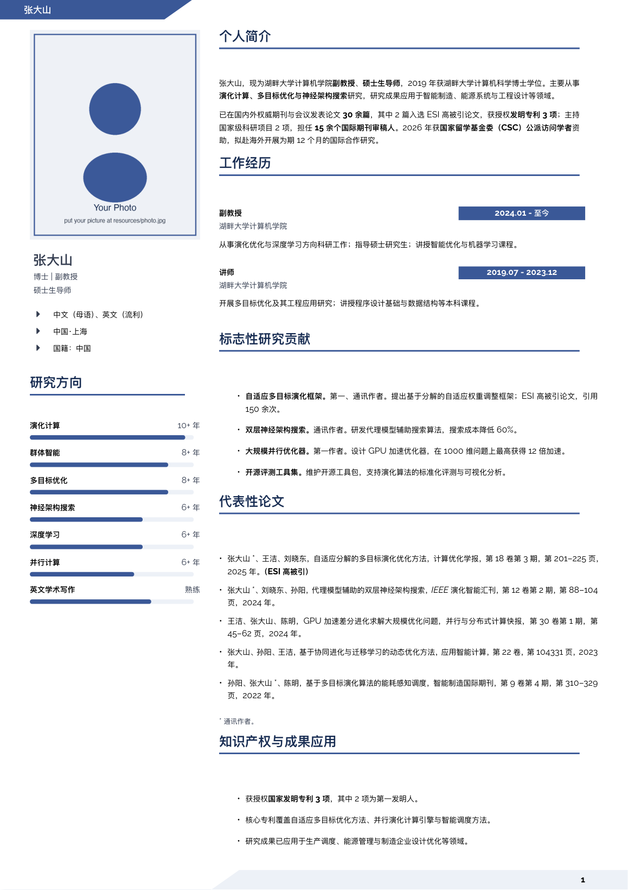
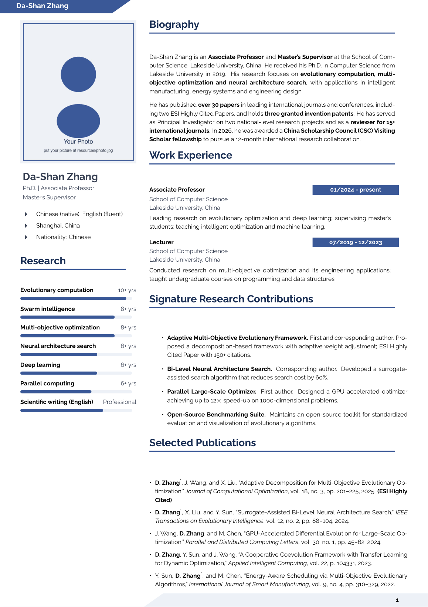

🎓 访问学者简历模板
中英双语 · 双栏布局 · 一键换肤的专业 LaTeX 学术简历
Visiting Scholar CV Template — XeLaTeX · Bilingual (EN / ZH) · MIT License


中英双语 · 双栏布局 · 一键换肤的专业 LaTeX 学术简历
Visiting Scholar CV Template — XeLaTeX · Bilingual (EN / ZH) · MIT License
英文版与中文版共用同一套样式文件，分别编译即可生成两份简历。
左侧栏承载照片、技能、教育、联系方式；右侧主体承载简介、论文、项目与荣誉。
全局配色集中管理，修改 4 个 RGB 值即可整体更换主题色，适配不同院校风格。
样式、入口、内容三层分离。修改个人信息只需编辑一个内容文件，零 LaTeX 门槛。
全宽进度条直观呈现研究方向与技能熟练度，排版精细对齐。
Font Awesome 图标 + 可点击的邮箱、GitHub、电话链接，方便导师一键联系。


将模板克隆到本地（或直接下载 ZIP）。
打开 cv-content-zh.tex（中文）或 cv-content-en.tex（英文），按注释替换示例内容（张大山 / Da-Shan Zhang）。
将你的证件照放入 resources/photo.jpg。
在 academic-cv.sty 的配色区块修改 4 个 RGB 值，即可切换整体主题色。
需要 TeX Live 2024+，运行下方命令即可。